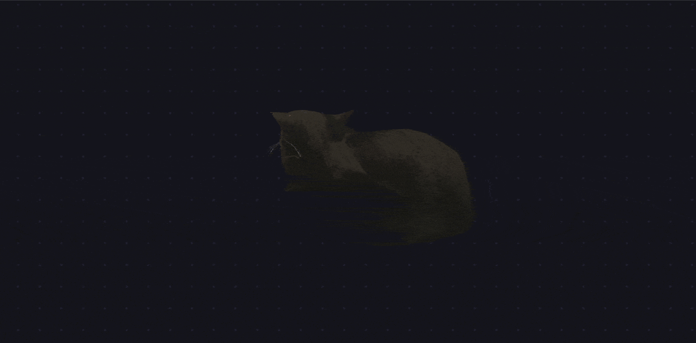
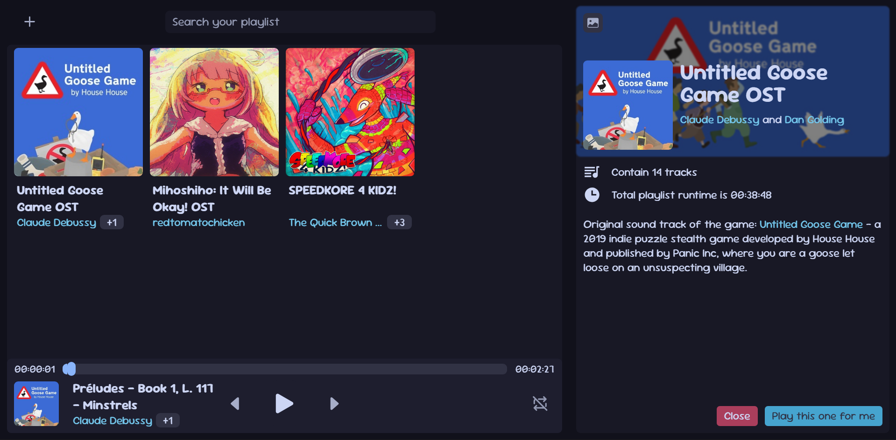
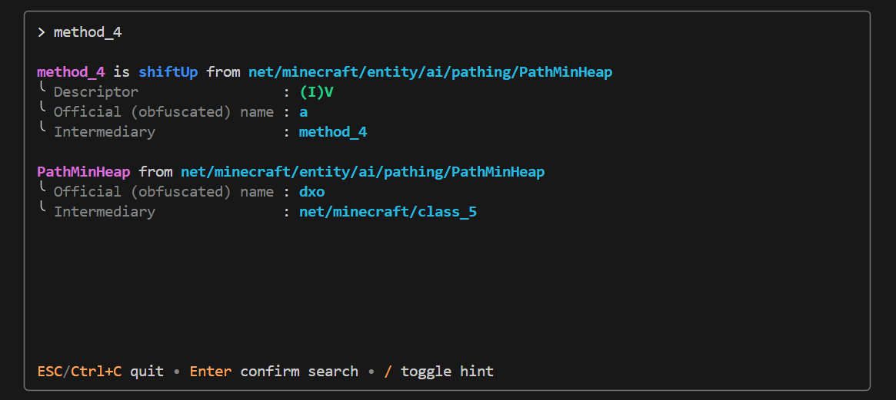

Hello, I guess
I'm mint_duck (lilunderDuck), and I do weird project when I have free time, or I just getting too excited about something. Generally addicted to chocolate, and likes cat.
I need to speedrun this
It's a "final project" for my required course: Introduction to HTML5, so let's speedrun the checklist.
Our checklist:
- At least three semantic tags including main and h1 (oh look at that, we already have it!)
- At least one list with a minimum of three items (well, it's right here)
- Apparently, they don't think <ol> (ordered list) is... a list. Whatever, <ul> (unordered list) this time
- At least one link to an external source (we're getting so fast)
- At least three images -> Right down here bud
Some weird stuff
A 3D rendered Maxwell the Cat

A locally hosted playlist that run directly on your browser tab

A (experiment) terminal UI program that allow you to search fabric .tiny V1 mappings.
